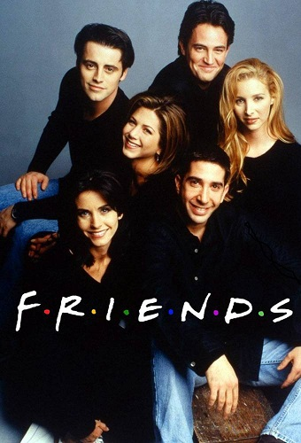
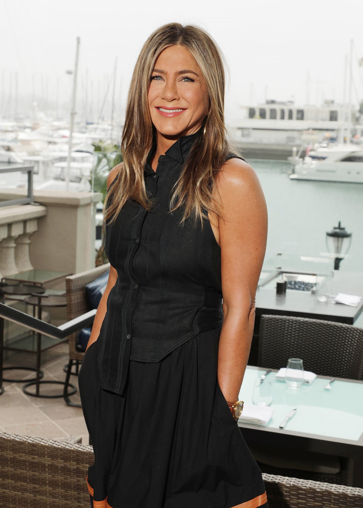
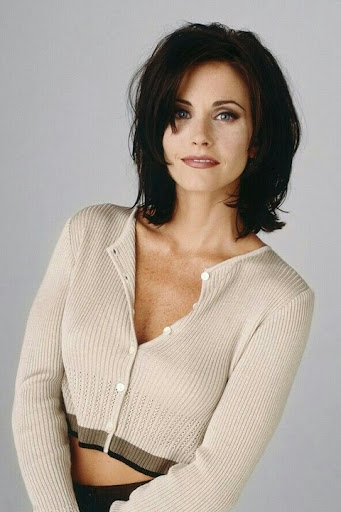
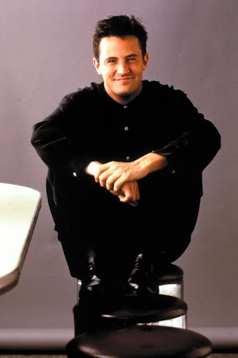
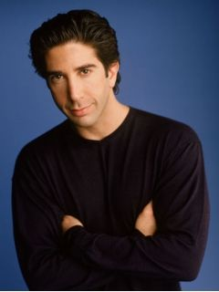

«Дру́зі» (англ. «Friends») — популярний американський ситком про групу з шести друзів, що живуть у Нью-Йорку. З 1994 по 2004 було знято 236 серій, які демонструвалися на телеканалі «NBC». Серіал із великим успіхом демонструвався в різних країнах світу і за свої 10 сезонів на телебаченні дістав величезну кількість нагород («Еммі» і «Золотий глобус») Серіал «Друзі» був спродюсований компанією «Bright/Kauffman/Crane Productions» спільно зі студією «Warner Bros. Television», прем'єрні покази транслювалися американським телеканалом «NBC» (з 22 вересня 1994 по 6 травня 2004). Фінальний епізод серіалу зайняв четверте місце в рейтингу останніх епізодів телесеріалів — у прем'єрному ефірі його бачили 52,5 мільйона осіб.
Сюжет
Створена Девідом Крейном і Мартою Кауффман, ця ансамблева комедія стала найпопулярнішою новою комедією ситуацій сезону 1994–1995 років, займаючи 8 місце в рейтингу Нільсена. Герої — шестеро молодих людей, що живуть у Нью-Йорку (в основному на Мангеттені) і зустрічаються в улюбленому кафе — «Central Perk». Серіал розповідає про життя шести друзів: розпещену «татусеву доньку» Рейчел Ґрін (Дженніфер Еністон), чистюлю-кухаря Моніку Ґеллер (Кортні Кокс), офісного працівника Чендлера Бінґа (Меттью Перрі), схибленого на сексі і їжі, нетямущого актора Джої Тріббіані (Метт Леблан), розлученого палеонтолога Роса Ґеллера (Девід Швіммер), масажистки-хіпі та співачки Фібі Буффе (Ліза Кудров). Довкола цієї міцної компанії будується нескінченна кількість різних історій: у друзів трапляються романи, вони сваряться і миряться. Однак, молодь не може бути до кінця серйозною, тож друзі не пропускають нагоди пожартувати, а почуття гумору у них відмінне. На початку серіалу Рейчел кидає свого нареченого просто біля весільного вівтаря і переїжджає до своєї шкільної подруги Моніки, з якою вони не бачилися багато років. Вони мешкають у квартирі навпроти квартири Чендлера і Джої. Ця четвірка дружить із братом Моніки, Росом (який зовсім нещодавно розлучився зі своєю дружиною, що стала лесбійкою) і з Фібі — дівчиною без певної професії, колишньою сусідкою Моніки. Основна дія серіалу розгортається у квартирах Моніки, Чендлера і в кав'ярні «Central Perk» (укр. «Центральна Кав'ярня»). Залишивши свого нареченого, Рейчел вирішує розпочати самостійне життя і відмовитися від батькових грошей. Почавши працювати офіціанткою в кав'ярні, вона робить кар'єру у світі моди — проходить шлях від молодшого асистента начальника відділу закупівель в універмазі «Bloomingdale's[en]» до начальника відділу мерчандайзингу в компанії «Ральф Лорен». Моніка протягом перших кількох сезонів відчуває труднощі в кар'єрі, але все ж таки досягає успіху, стаючи згодом шеф-кухарем престижного ресторану. Чендлер, спершу працюючи співробітником відділу статистики, відкриває себе в рекламному бізнесі. Джої з перемінним успіхом знімається в різних телесеріалах і рекламі, грає в театрі і кіно, а вершиною його кар'єри стає роль доктора Дрейка Раморе в популярному серіалі «Дні нашого життя». Палеонтолог Рос працює спочатку співробітником музею, а пізніше — викладачем в університеті. Фібі заробляє, працюючи масажисткою, а також виконуючи дивні пісні з власного репертуару під гітару. Основною сюжетною лінією серіалу є романтичні стосунки Роса і Рейчел[3], які постійно то сходяться, то знову розлучаються. Рос закоханий у Рейчел ще зі школи, але вона тривалий час не звертає на нього уваги. Їхні стосунки змінюються від пристрасної та ніжної любові до неприязні. Випадково Рейчел вагітніє від Роса та народжує доньку Емму. І лише в самому кінці серіалу пара приймає рішення більше ніколи не розлучатися. Починаючи з четвертого сезону з'являється важлива сюжетна лінія стосунків Чендлера і Моніки. Решта друзів перебувають у пошуку супутників життя. До кінця серіалу Чендлер і Моніка одружуються, Фібі також виходить заміж і вільним залишається тільки Джої. У більшості епізодів є три невеликі, приблизно рівнозначні, сюжетні лінії всередині епізоду. Загальний сюжет серіалу розвивається поступово — одночасно з логічно завершеним сюжетом конкретної серії
Головні герої
-
Рейчел Карен Грін (Дженніфер Еністон) — донька заможних батьків, ніколи не працювала і жила на гроші тата. Вона має двох сестер — Еммі і Джил. У Рейчел був наречений, але вона кинула його і втекла з весілля, а потім оселилася у Моніки. Вони були найкращими подругами в середній школі. Тоді у Рейчел був величезний ніс, який незабаром довелося вкоротити. Життя у великому місті спочатку здавалося їй досить важким, тим паче, що їй довелося шукати роботу, чого вона раніше ніколи не робила. Спершу Рейчел працювала офіціанткою в «Central Perk», але незабаром почала кар'єру в моді. Перша така робота була невдалою — вона знову подавала каву для боса. Пізніше вона влаштувалася працювати в Bloomingdales. У Рейчел шалено закоханий Рос, але спочатку вона не звертала на нього уваги. У Рейчел чимало залицяльників (на превелике розчарування Роса). Та врешті-решт, Рейчел і Рос розуміють, що створені одне для одного. Пізніше їхні стосунки дають тріщину через надмірну зайнятість Рейчел і ревнощі Роса. Проте, стосунки між ними не закінчуються, вони продовжують любити одне одного, хоча деколи й не хочуть у цьому зізнаватися. У восьмому сезоні вона народжує від нього дитину — Емму.
 -

Моніка Е. Ґеллер (Кортні Кокс) — сестра Роса та шкільна подруга Рейчел. Ця красива, струнка і приваблива жінка була дуже товстою в підлітковому віці. У дитинстві її навіть відправляли у «табір для товстунів». Моніка працює кухарем і просто «схиблена» на чистоті і порядку, що є предметом великої кількості жартів на її адресу. У Моніки дуже сильно розвинений дух змагань і вона прагне у всьому бути першою і найкращою. Незважаючи на свою привабливість, Моніка довго не може знайти свою любов і дуже переймається через це, оскільки з дитинства мріє про заміжжя і дітей. У неї доволі довго тривають серйозні стосунки з Річардом — лікарем-офтальмологом, товаришем її батька і дуже цікавою людиною. Він був старший за неї на 21 рік, але вона вирішує з ним розлучитися, коли дізнається, що Річард не хоче більше заводити дітей, оскільки у нього вже є діти від першого шлюбу. Ще у неї був невдалий роман із мультимільйонером Пітом Беккером. Та він припинився, бо той забажав стати учасником боїв без правил. Несподівано Моніка знаходить своє щастя зі своїм другом Чендлером. Вони півроку приховують свої стосунки від друзів, але все таємне стає явним. Моніка з Чендлером вирішують жити разом і, в результаті, вона виходить за нього заміж.
-
Фібі Буфе (Ліза Кудров): Велику частину часу Фібі Буфе літає поміж хмар. Фібі рано почала самостійне життя після того, як її мати наклала на себе руки. Їй довелося якийсь час жити на вулиці, що, поза сумнівом, відбилося на її поведінці. Вона знайшла своє покликання в аромотерапії. Фібі працює масажисткою і співає в кав'ярні пісні власного авторства. Фібі вегетаріанка. У неї своєрідне мислення і поведінка. Вона вірить, що іноді здатна читати думки людей або відчувати присутність померлих друзів чи рідних. Упродовж майже всього серіалу вона мешкає у своєї бабусі. У неї є сестра-близнючка, Урсула Памела Буфе, але вони майже не спілкуються. Фібі також стає сурогатною матір'ю для дітей свого брата Френка та його дружини Еліс. Велика частина сюжетів про Фібі присвячена її складним сімейним взаєминам. У деяких серіях присутні прозорі натяки на бісексуальність Фібі.

-

Джозеф Френсіс Трібіані або Джої Трібіані (Метт Леблан) — людина-дитина. Незважаючи на те, що він здається цілком дорослим, привабливим чоловіком, у душі він дуже наївний. Джої виріс у сім'ї італійських іммігрантів. У нього сім сестер і він дуже ревно про них піклується. Джої мешкає разом зі своїм другом Чендлером, колишнім однокурсником Роса. Їхня квартира розташована просто навпроти квартири Моніки — сестри Роса. Таке географічне положення сприяє тому, що Джої, завжди охочий чогось перехопити, проводить багато часу на кухні у Моніки. Джої ніколи не ділиться їжею. Хоча Джої і не надто розумний і освічений, він підкуповує своєю добротою і наївністю. Джої — актор-початківець, мріє зробити кар'єру в кіно. Його кумир — Аль Пачіно. Поки що Джої дістаються досить дивні ролі, наприклад — Піноккіо в дитячому фільмі або Зигмунда Фрейда в мюзиклі. Одного разу йому довелося дублювати одну з частин тіла самого Аль Пачіно, утім, цю «роль» він провалив. Врешті-решт, Джої отримав невелику роль лікаря Дрейка Раморе в мильній опері «Дні нашого життя», але незабаром за сценарієм був «убитий». Джої не вирізняється великим інтелектом, він вважає себе чарівним і дуже сексуальним. Він не схильний до тривалих стосунків із жінками, досить часто змінює подружок. Його коронна фраза — «Як життя?». А ще Джої закохався у Рейчел, коли вона була вагітна від Роса. Метт Леблан вигадав цей поворот сюжету сам, аби пожвавити хід серіалу в останніх сезонах.
-
Чендлер Бінг (Меттью Перрі): Чендлер Мюрієль Бінґ — сусід з квартири Джої, друг і колишній однокурсник Роса. У Чендлера не складаються стосунки з дівчатами. Він не любить День подяки, оскільки саме цього дня, будучи 9-річним хлопчиком, він дізнався, що його батьки розлучаються. І воно б не біда, та батько зраджував матері з дворецьким і в результаті перевтілився в жінку і став солістом у шоу ґеїв у Лас-Вегасі. Чендлер постійно жартує і особливо сильно, коли починає нервувати — це щось подібне до захисної реакції. Чендлер зустрічався з дуже незвичайною персоною — Дженіс, особливістю якої є бридкий голос і постійне повторювання фрази «О — Боже — мій!». Чендлер дуже боїться серйозних стосунків, бо його неабияк травмувала історія власних батьків. Чендлер достатньо успішно просувається вгору кар'єрною драбиною, хоча друзі ніяк не можуть запам'ятати де ж він працює і чим займається. У кінці четвертого сезону на другому весіллі Роса, Чендлер завів роман із Монікою. У них зав'язуються дуже зворушливі і серйозні стосунки і вони з Монікою наважуються взяти шлюб. Наприкінці серіалу Чендлер і Моніка усиновлюють двох дітей і переселяються за місто, щоб ростити їх там.
 -

Рос Геллер (Девід Швіммер): Рос Ґеллер — брат Моніки, друг і колишній однокурсник Чендлера. Рос — палеонтолог і має ступінь доктора, працює у музеї. Його любов до динозаврів є причиною численних насмішок. Рос не дуже балакучий і до того ж сором'язливий. Він першим із друзів одружується, але раптом дізнається, що його дружина Керол — лесбійка. Вони розходяться, але незабаром колишня дружина повідомляє, що чекає від нього дитину. Керол і її подруга вважають, що Рос повинен брати участь у вихованні сина, попри те, що він і нова «дружина» Керол — Сьюзен, терпіти одне одного не можуть. Все це стає для нього серйозним випробуванням, але в його житті з'являється Рейчел — подруга його сестри Моніки, у яку він закоханий з 9 класу. Рейчел не відповідала йому взаємністю. Врешті-решт, Рос і Рейчел все ж таки стали зустрічатися. Та незабаром розійшлися і стали просто друзями. Протягом усього серіалу Рос і Рейчел не можуть повністю забути одне про одного. Під час подорожі до Лас-Вегаса вони навіть одружуються, але наступного дня, протверезівши, розуміють, що накоїли, і розлучаються. Під час весілля Моніки і Чендлера, з'ясовується, що Рейчел вагітна від Роса, і згодом у них народжується донька Емма, яку вони вирішують виховувати разом, але не поновлювати своїх стосунків. В останній серії ситкому Рос і Рейчел все ж таки знову розуміють, що кохають одне одного і залишаються разом.